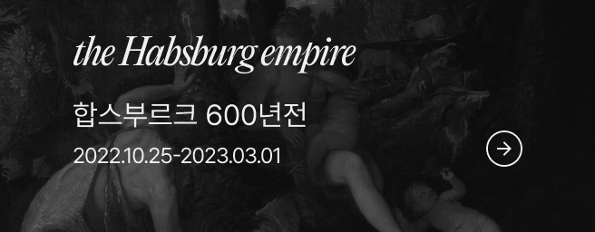
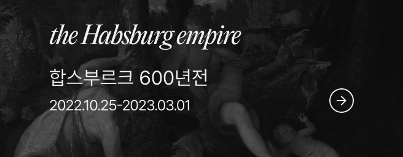
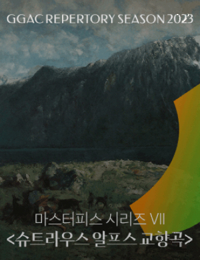
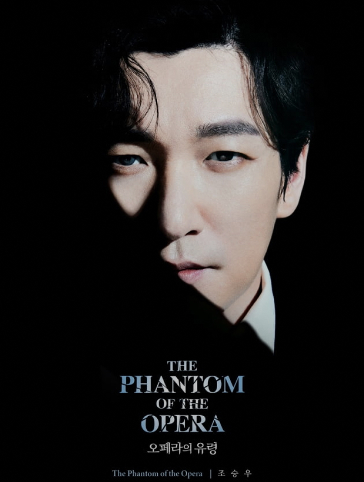
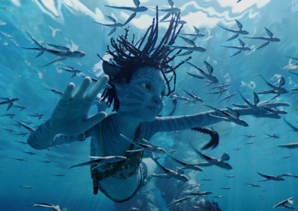

arte 랭킹 - 도서
-
2
 〈지저스 크라이스트 수퍼스타〉
〈지저스 크라이스트 수퍼스타〉- 김동욱
- 움파룸파
-
3〈오페라의 유령〉 - 부산
- 김동욱
- 움파룸파
-
4

-
5〈캣츠〉 오리지널 내한
- 김동욱
- 움파룸파
검색결과 총 204개
검색결과가 없습니다.
-
내 귀에 캔디 회원 7.0
-
 연극
브로드웨이 42번가
잔혹하지만 사랑할 수 밖에 없는 마성의 뮤지컬 '드라큘라'뮤지컬 '드라큘라'가 잔혹하지만 거부할 수 없는 유혹으로 찾아온다. 세상 어디서도 볼 수 없던 매혹적인 드라큘라의 로맨스를 무대에서 만난다. 현재 샤롯데씨어터에서 뮤지컬 '드라큘라'가 공연 중이다. 초연의 김준수, 류정한, 조정은, 임혜영을 필두로 뉴캐스트로 전동석, 린지 등이 합류했다. 강태을, 손준호, 이충주, 진태화, 이예은, 김수연 등 조연내 귀에 캔디 arte